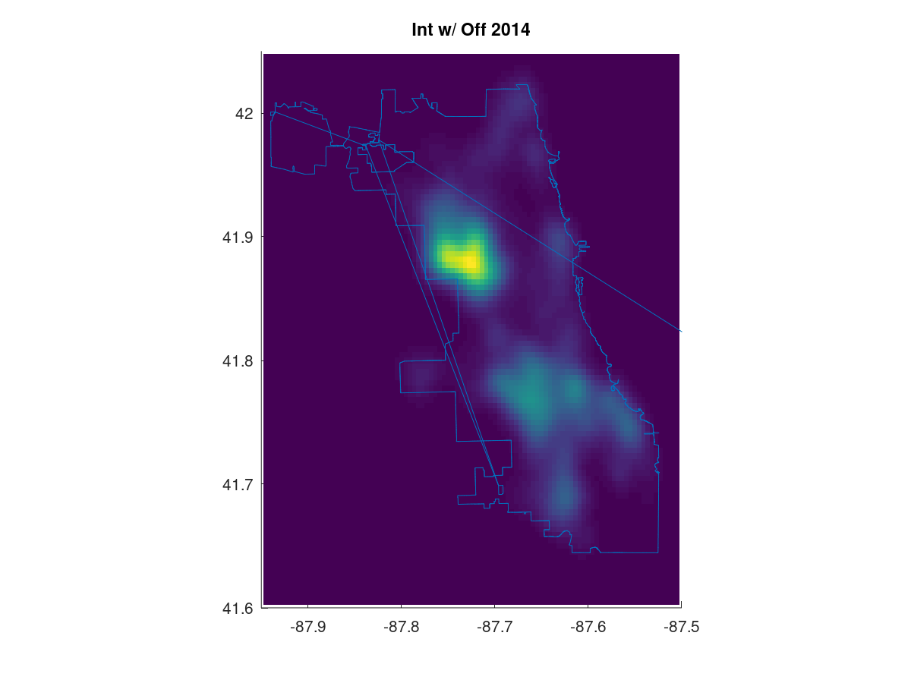
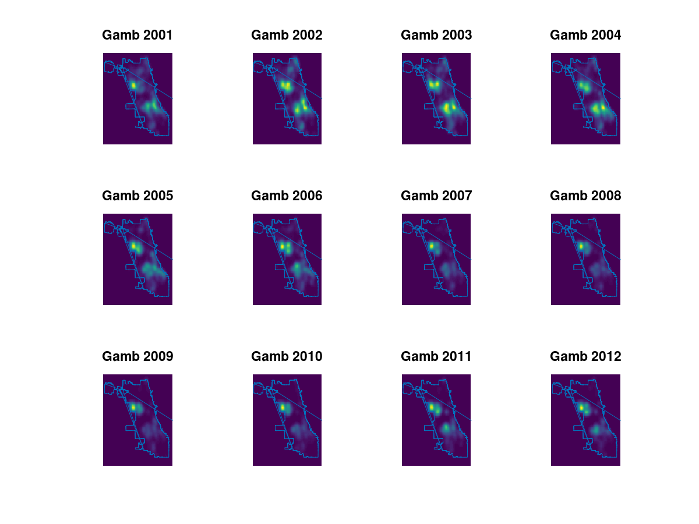

Demonstrates estimation using Gaussian distributions fit from data.
Author: Damien Pitman
pkg load statistics; % necessary to calculate statistics in Octave
gaussfit.m returns parameters of a best fit Gaussian Distribution.employees.mat contains salaries and departments of individuals.Load the following data structures
* sal (double array): salaries of individuals
* dept (int32 array): department numbers of individuals
* depts (struct): department names by number
load "employees.mat";
Process names and numbers of departments
deptnames = fieldnames(depts); % |cell| structure deptnumbers = struct2cell(depts); % |cell| structure
Prepare variables to analyze data
max_dept = max(dept); % finds greatest number (identifier) of a department mu = zeros(max_dept,1); % initialize array for salary means by dept sigma = zeros(max_dept,1); % initialize array for salary st. dev's by dept prob = zeros(max_dept,1); % initialize array for density of salaries at -10000
Find parameters of Gaussian distributions on departmental salaries.
for i = 1:max_dept [mu(i),sigma(i)] = gaussfit( sal(dept == i) ); prob(i) = normpdf( -10000, mu(i), sigma(i) ); end
Find departments with least and greatest mean salaries.
[min_mu, min_mu_idx] = min(mu); [max_mu, max_mu_idx] = max(mu); disp(sprintf("The department of %s has the lowest mean salary: $%d.", deptnames(min_mu_idx){:}, min_mu)) disp(sprintf("The department of %s has the highest mean salary: $%d.", deptnames(max_mu_idx){:}, max_mu))
The department of INSPECTOR GEN has the lowest mean salary: $38635.3. The department of CULTURAL AFFAIRS has the highest mean salary: $94083.5.
Find departments with least and greatest variance in salaries.
[min_sigma, min_sigma_idx] = min(sigma); [max_sigma, max_sigma_idx] = max(sigma); disp(sprintf("The department of %s has the least variance in salary: $%d.", deptnames(min_sigma_idx){:}, min_sigma)) disp(sprintf("The department of %s has the greatest variance in salary: $%d.", deptnames(max_sigma_idx){:}, max_sigma))
The department of HUMAN RELATIONS has the least variance in salary: $0. The department of CITY COUNCIL has the greatest variance in salary: $42916.6.
Find departments with least and greatest density of salary at -$10000.
[min_prob, min_prob_idx] = min(prob); [max_prob, max_prob_idx] = max(prob); disp(sprintf( "The department of %s has the least density for a salary of -$10000: %d.", deptnames(min_prob_idx){:}, min_prob)) disp(sprintf( "The department of %s has the greatest density for a salary of -$10000: %d.", deptnames(max_prob_idx){:}, max_prob))
The department of HEALTH has the least density for a salary of -$10000: 2.02064e-15. The department of INSPECTOR GEN has the greatest density for a salary of -$10000: 4.35093e-06.
Create and discuss density maps of crimes in Chicago area.
Load data structures on 5,684,253 crimes in Chicago.
load "crimes.mat"
Output
lat (double array): lattitudes of crimeslon (double array): longitudes of crimestype (int array): type of crime identifiertypes (struct): type identifiers to namesyear (double array): four digit year of crimeSet parameters for kernel estimation and mapping.
h = 0.01; % standard deviation for Gaussian kernel estimation y = [41.6,42.05]; % latitudes to limit map x = [-87.95, -87.5]; % longitudes to limit map lims = dlmread("clean.csv"); % city limit coordinates
Generate Gaussian kernel densities for interference with an officer in 2014.
map = kdemap(lat( type == 1 & year == 2014 ),
lon( type == 1 & year == 2014 ), h, 100 );
Display densities as a map where lighter colors correspond to more crime.
hold on; set(gca, 'XLim', x, 'YLim', y); % new figure w/ appropriate boundaries imagesc(x,y,flipud(map)); % print the density map plot( lims(:,1), lims(:,2) ); % superimpose city limits with some artifacts daspect([1 cos(41/180*pi) 1]); % fix aspect ratio for appropriate stretching title('Int w/ Off 2014'); hold off;
Examine gambling crimes from 2001 to 2012.
for k = 1:12 subplot(3,4,k) yr = 2000+k; map = kdemap(lat( type == 15 & year == yr ), lon( type == 15 & year == yr ), h, 100 ); hold on; set(gca, 'XLim', x, 'YLim', y); axis off imagesc(x,y,flipud(map)); plot( lims(:,1), lims(:,2) ); daspect([1 cos(41/180*pi) 1]); title(['Gamb ',sprintf('%d',yr)]); hold off; end
Discussion: Gambling crime density is stable or decreasing in many areas. There is a substantial decreas in the southeast. There is no substantial decrease in one central western region. Thus, gambling crime became more concentrated there.